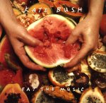

(These lyrics were originally from Wieland Willker's
Moments)
 The Red Shoes page
The Red Shoes page
Album/Era
Alphabetical
Gaffaweb
"Eat The Music"
The Red Shoes
Written by Kate Bush

- Split me open
- With devotion
- You put your hands in
- And rip my heart out
- Eat the music
- Does he conceal
- What he really feels?
- He's a woman at heart
- And I love him for that
- Let's split him open
- Like a pomegranate
- Insides out
- All is revealed
- Not only women bleed
- Take the stone out
- Of the mango
- You put it in your mouth
- And pull a plum out
- Take a papaya
- You like a guava?
- Grab a banana
- And a sultana
- Rip them to pieces
- With sticky fingers
- Split the banana
- Crush the sultana
- Split 'em open
- With devotion
- You put your hands in
- And rip their hearts out
- Like a pomegranate
- Insides out
- He's a woman at heart
- And love him for that
- Take a papaya
- You like a guavva?
- Grab a banana
- And a sultana
- Rip 'em to pieces
- With sticky fingers
- Split the banana
- Crush the sultana
- All emotion
- And with devotion
- You put your hands in
- What ya thinking?
- What am I singing?
- A song of seeds
- The food of love
- Eat the music
©1993 Kate Bush Music Ltd.
The Red Shoes page
{kind=link}